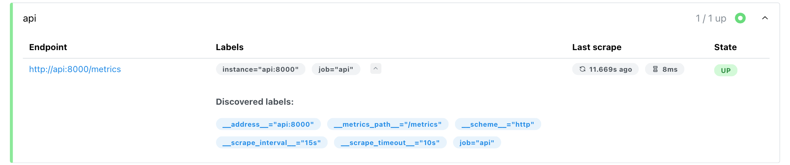
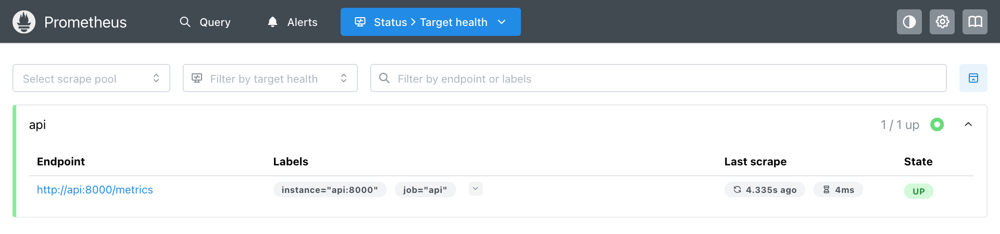

Модуль 2 · как работает prometheus · сбор метрик
Глава 2.2
Target: куда обращаться
за метриками
Первое, что нужно знать Prometheus о приложении, — по какому адресу лежат его метрики. В этой главе разобрано понятие target: из каких частей Prometheus собирает адрес запроса, какие метки получает каждый target, что такое job и instance. Отдельно разобрано, почему один и тот же адрес работает с компьютера и не работает из контейнера, и откуда Prometheus берёт список target.
- Категория
- Конфигурация сбора
- Уровень
- Средний
- Опирается на
- Глава 2.1: части системы; основы Docker
- Результат
- Правильный адрес target для своего окружения
§1Понятие target
Приложение с метриками — это процесс, который слушает сетевой порт и отвечает на HTTP-запросы. Prometheus не знает о нём ничего, пока адрес процесса не записан в конфигурацию или не получен из системы обнаружения. Адрес, по которому Prometheus регулярно запрашивает метрики, называется target.
Targetцель сбора · один адрес
Конечная точка, с которой Prometheus собирает метрики: пара «хост — порт» вместе с протоколом и путём. Обычно один target соответствует одному процессу приложения.
Target отвечает на вопрос: куда обратиться, чтобы получить метрики. В конфигурации его записывают как host:port, например localhost:8000 или api:8000. Протокол и путь Prometheus подставляет сам.
На стенде модуля target один. Он записан в файле prometheus.yml:
global: scrape_interval: 15s scrape_timeout: 10s scrape_configs: - job_name: api static_configs: - targets: ['api:8000']
scrape_configs — список заданий сбора. Задание api содержит один статический target — api:8000. Строки global задают частоту и предельное время сбора; они разобраны в главе 2.4.
§2Как собирается адрес запроса
Строка api:8000 — только часть адреса. Для каждого target Prometheus заводит набор служебных меток, имена которых начинаются с двух подчёркиваний. Из них собирается полный URL запроса. Эти метки видны в интерфейсе: Status → Target health, стрелка рядом с метками target.

| Служебная метка | Значение на стенде | Откуда | Роль в запросе |
|---|---|---|---|
__scheme__ | http | Параметр scheme задания, по умолчанию http | Протокол: http://api:8000/metrics |
__address__ | api:8000 | Строка из targets | Хост и порт: http://api:8000/metrics |
__metrics_path__ | /metrics | Параметр metrics_path, по умолчанию /metrics | Путь: http://api:8000/metrics |
__scrape_interval__ | 15s | scrape_interval задания или global | Как часто выполнять запрос |
__scrape_timeout__ | 10s | scrape_timeout задания или global | Сколько ждать ответа |
job | api | job_name | Остаётся на рядах как метка |
Служебные метки существуют только до начала сбора. После обработки target все метки с префиксом __ удаляются, а на рядах остаются обычные: job и instance. Если instance не задан явно, Prometheus берёт его из __address__. Поэтому на стенде instance="api:8000".
Порт в targets можно не писать. Тогда запрос идёт на стандартный порт схемы: 80 для http, 443 для https. На стенде target api без порта Prometheus 3.5.0 превратил в URL http://api/metrics и метку instance="api" — без номера порта. Приложение на порту 80 не слушает, и сбор не прошёл.
В targets записывают только host:port. Строка http://api:8000/metrics в этом поле — ошибка конфигурации; promtool check config сообщает: "http://api:8000/metrics" is not a valid hostname. Протокол задаётся параметром scheme, путь — параметром metrics_path. Путь меняют, когда метрики отдаются не по /metrics, например у Spring Boot это /actuator/prometheus.
§3Job и instance
Один сервис обычно работает в нескольких экземплярах: так он выдерживает нагрузку и переживает падение одного процесса. Prometheus различает сам сервис и его экземпляры двумя метками.
Instance и jobэкземпляр и задание
Instance — конечная точка, с которой можно собрать метрики; обычно один процесс. Метка instance по умолчанию равна host:port этого процесса.
Job — группа instance с одинаковым назначением, например копии одного сервиса. Метка job равна имени задания в scrape_configs. Все target одного задания в интерфейсе называются scrape pool.
Пример из документации Prometheus — задание api-server с четырьмя экземплярами:
- job_name: api-server static_configs: - targets: - '1.2.3.4:5670' - '1.2.3.4:5671' - '5.6.7.8:5670' - '5.6.7.8:5671'
Каждый ряд каждого экземпляра получит job="api-server" и свой instance. Благодаря этим меткам запрос может сложить значения по всему сервису или выбрать один экземпляр. На одном хосте 1.2.3.4 работают два процесса на разных портах, поэтому instance — это пара хост — порт целиком.

api на стенде: один instance, состояние UP, последний сбор 4,3 с назад и занял 4 мс§4Адрес зависит от места Prometheus
Адрес target Prometheus разрешает из своего сетевого окружения. Один и тот же localhost:8000 означает разные машины для процесса на компьютере и для процесса в контейнере. У каждого контейнера Docker своё сетевое пространство: свой localhost, свои порты и свои имена.
Записка «зайди в квартиру 5» понятна, только если известно, в каком доме находится тот, кто её читает. Жилец соседнего дома попадёт в свою квартиру 5.
localhost — «этот же дом». Для Prometheus в контейнере это сам контейнер Prometheus, где на порту 8000 никто не слушает. Приложение в соседнем контейнере доступно по имени сервиса Compose: api:8000.
На стенде приложение описано в compose.yaml как сервис api, порт внутри контейнера — 8000. Строка ports: ['127.0.0.1:8020:8000'] открывает его на компьютере как localhost:8020. Внутри сети Compose встроенный DNS Docker разрешает имя api в адрес контейнера приложения. Ниже — какие адреса работают из разных мест. Результаты с пометкой «проверено» получены на стенде.
Отсюда правило для конфигурации: адрес target записывают так, как его видит процесс Prometheus. В одной сети Compose — имя сервиса и внутренний порт. Для Prometheus на компьютере — localhost и опубликованный порт.
§5Откуда берётся список target
На стенде список target записан в файле вручную — это static_configs. Так делают, когда адреса постоянны. В облаке и в Kubernetes экземпляры появляются и исчезают каждые несколько минут, и вручную список не поддержать. Для этого есть service discovery — получение списка target из внешнего источника.
| Способ | Параметр в задании | Откуда адреса |
|---|---|---|
| Статический список | static_configs | Файл prometheus.yml; изменения — после перезагрузки конфигурации |
| Файлы с адресами | file_sd_configs | JSON или YAML, которые пишет другая программа; Prometheus следит за изменениями без перезагрузки |
| DNS | dns_sd_configs | Записи A, AAAA или SRV |
| Kubernetes | kubernetes_sd_configs | API Kubernetes: pod, service, endpoints, node |
| Consul, EC2 и другие | consul_sd_configs, ec2_sd_configs, … | Реестр сервисов или API облака |
Любой способ даёт одно и то же: набор служебных меток для каждого target, как в §2. Источник может добавить свои метки, например __meta_kubernetes_pod_name. До начала сбора их можно преобразовать правилами relabel_configs: переименовать, скопировать в обычные метки, отбросить target. После этого метки с __ удаляются.
Свои постоянные метки можно добавить и к статическому target. Они окажутся на всех его рядах, включая up:
static_configs: - targets: ['api:8000'] labels: env: dev
§6Метки target и метки приложения
Ряд получает метки из двух источников: от приложения (в ответе /metrics) и от target (job, instance, labels из конфигурации). Если приложение само отдаёт метку job или instance, возникает конфликт. Его разрешает параметр задания honor_labels. Опыт на стенде: программа отдаёт ряд с метками job="nightly-report" и instance="worker-7", её собирают два задания.
ответ: batch_last_success_timestamp_seconds{job="nightly-report",instance="worker-7"} 1790640000
honor_labels: false (по умолчанию), labels: {env: dev}
{env="dev", exported_instance="worker-7", exported_job="nightly-report",
instance="echo2:8000", job="default-labels"}
honor_labels: true
{instance="worker-7", job="nightly-report"}
По умолчанию побеждают метки target, а метки приложения сохраняются с префиксом exported_. С honor_labels: true побеждают метки приложения, а метки target на этих рядах теряются. Ряд up при этом по-прежнему получает метки target: job="honor", instance="echo2:8000".
honor_labels: true включают для источников, которые передают чужие метрики: Pushgateway и федерация Prometheus. Там job и instance в ответе описывают настоящий источник данных; промежуточный сервер только передаёт их. Для обычного приложения параметр оставляют выключенным.
§7Проверьте себя
Вопрос 1Prometheus и приложение запущены в одной сети Compose, сервис приложения называется api, порт внутри контейнера 8000, на компьютере опубликован как 8020. Какой target записать?
Этот адрес работает с компьютера. Внутри контейнера Prometheus localhost — сам контейнер, на стенде ошибка
connection refused.Верно. Имя сервиса разрешает DNS сети Compose, а внутри сети доступен порт контейнера 8000.
В
targetsпишут только хост и порт. Схема и путь задаются параметрамиschemeиmetrics_path.
Вопрос 2Какой будет метка instance у рядов target api:8000, если её не задавать?
Верно. По умолчанию
instanceберётся из служебной метки__address__.Полный URL в метки не записывается. Он виден только в колонке Endpoint на странице Target health.
Prometheus записывает адрес так, как он указан в конфигурации, без разрешения имени.
Вопрос 3Приложение отдаёт ряд с меткой job="worker", задание называется api, honor_labels не указан. Какие метки получит ряд?
Так будет с
honor_labels: true. По умолчанию побеждает метка target.Верно. Метка приложения не теряется, а переименовывается с префиксом
exported_.Конфликт меток ошибкой не считается: его разрешает
honor_labels.
Вопрос 4Чем job отличается от instance?
Instance — это пара хост — порт целиком. Job к адресам не привязан.
Верно. Так эти понятия определены в документации Prometheus.
Обе метки ставит Prometheus:
jobиз имени задания,instanceиз адреса target.
- Prometheus. Jobs and instances — prometheus.io/docs/concepts/jobs_instances
- Prometheus. Configuration: scrape_config, static_config, relabel_config — prometheus.io/docs/prometheus/latest/configuration/configuration
- Docker. Networking in Compose — docs.docker.com/compose/how-tos/networking
- Стенд модуля: Prometheus 3.5.0, Docker Desktop; опыты с адресами и honor_labels выполнены 29.09.2026